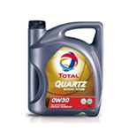

수 GXO SN/GF-5 5W30

수 GXO SN/GF-5 5W30
SSU GXO SN/GF-5 5W30
열산화안정성이 우수하여 엔진내부에 찌꺼기 생성을 억제합니다.
고속주행시에도 부드러운 승차감과 정숙성을 유지시켜줍니다.
모든 가솔린 및 디젤 엔진에 사용가능하며, 특히 최신엔진에 적합합니다. 사용 전에 자동차사 매뉴얼을 확인하세요.
가다 서다를 반복하는 도심운전조건, 고속의 고속도로 주행조건, 경주용 차량 등의 가혹한 운전조건의 차량에서도 최적의 윤활성능을 발휘하는 사계절용 엔진오일입니다.
엔진 수명의 최적화 : 내마모성을 증가시켜 엔진을 보호합니다.
교환주기를 연장시킵니다. 우수한 청정분산성으로 엔진을 청정하게 유지하고 엔진의 구동력을 유지시켜줍니다. 뛰어난 유동성으로 극심한 조건의 저온시동성이 우수하고, 고온에서도 엔진의 보호성이 우수합니다. 뛰어난 유동성으로 마찰을 감소시켜, 연비를 향상시키고 CO2배출을 절감합니다. CO2 및 오염물질의 배출을 감소시켜 환경오염을 감소시킵니다.
| 시험항목 | 시험방법 | 단위 | OW30 |
|---|---|---|---|
| 전염기가 | ADTM D 2896 | mgKOH/g | 8.8 |
| 점도 40OC | ASTM D 445 | ㎟/s | 68.45 |
| 점도 100OC | (cSt) | 12.18 | |
| 점도지수 | ASTM D 2270 | - | 170 |
| 인화점 | ASTM D 92 | ℃ | 226 |
| 유동점 | ASTM D 97 | ℃ | -54 |